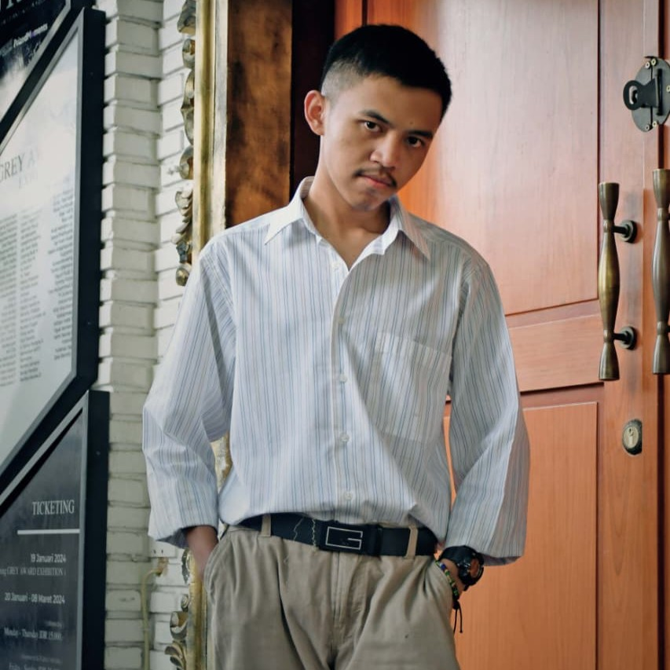

Mahasiswa Teknologi Komputer Politeknik Pajajaran

Mengubah rasa ingin tahu menjadi solusi teknologi yang bermanfaat. Mahasiswa Teknologi Komputer Politeknik pajajaran yang memiliki minat pada hardware komputer, jaringan, dan teknologi, serta terus mengembangkan kemampuan di bidang hardware dan software.
Saya adalah mahasiswa Teknologi Komputer Politeknik Pajajaran yang memiliki minat pada hardware komputer, jaringan, dan teknologi informasi. Saya senang mempelajari cara kerja sistem komputer mulai dari perakitan, pemeliharaan, hingga troubleshooting perangkat keras.
Selain hardware, saya juga memiliki ketertarikan pada pengembangan website, database, dan pemrograman Python. Saya percaya bahwa pemahaman hardware dan software yang seimbang dapat menghasilkan solusi teknologi yang lebih efektif.
Saat ini saya terus mengembangkan kemampuan teknis dan non-teknis melalui berbagai proyek dan pembelajaran mandiri. Saya bercita-cita berkarier di bidang teknologi komputer dengan fokus pada hardware, jaringan, dan infrastruktur sistem.
Membangun website portfolio responsif menggunakan HTML, CSS, dan JavaScript.
Aplikasi kasir sederhana dengan fitur transaksi, diskon, dan laporan harian.
Perancangan database dan implementasi query SQL untuk pengelolaan data.
Dokumentasi instalasi, upgrade, dan troubleshooting perangkat keras komputer.